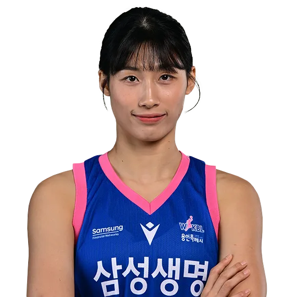

우크블? WKBL!

여자 농구도 있다!
KBL에 Woman을 붙여서 WKBL이다
저득점 리그로 세금 리그라고 욕을 많이 먹지만 그래도 보다보면 정이 가는 리그
남자 선수들의 체격은 다양하지만 여자 선수들의 체격은 편차가 적기 때문에
정말로 감독의 역량이 중요한 리그다
특이하게 외국인 용병은 없고 아시아 쿼터제를 운영하고 있다
사진은 우리 집 앞에 있는 삼성생명 블루밍스의 에이스 이해란이다.